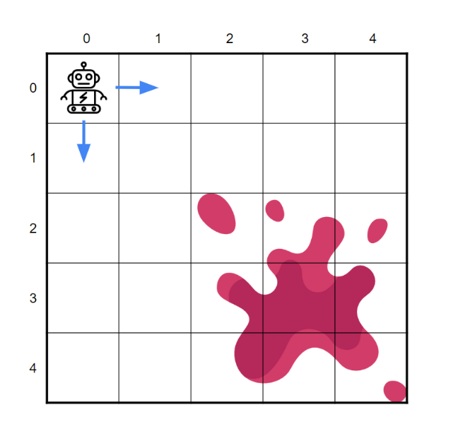

Mijn Projecten
Programming & Algorithmic Thinking Assignment
De opdracht is het programmeren van een robotstofzuiger voor een rastervormige kamer. De robot moet efficiënt vlekken schoonmaken met minimaal energieverbruik, door horizontaal of verticaal te bewegen en obstakels te vermijden. Het doel is een optimaal algoritme te ontwikkelen voor effectieve navigatie en schoonmaak, met een competitie voor de minste bewegingen.
Bekijk op GitHubProject 2: Machine Learning Model
Een geavanceerd machine learning-model dat voorspellingen kan doen op basis van historische data.
Bekijk op GitHub